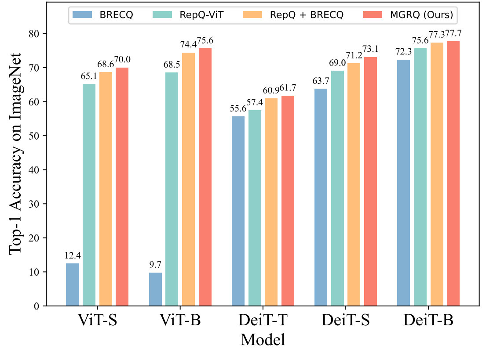
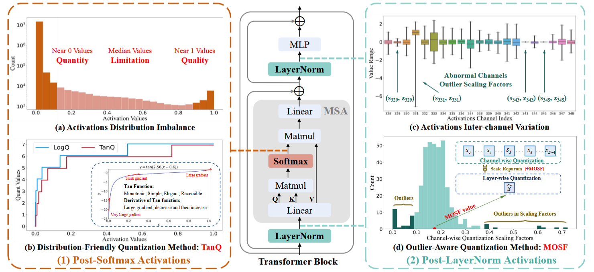
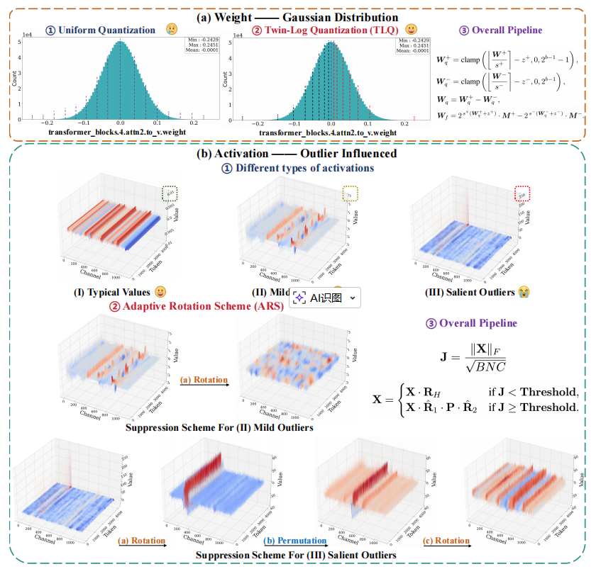
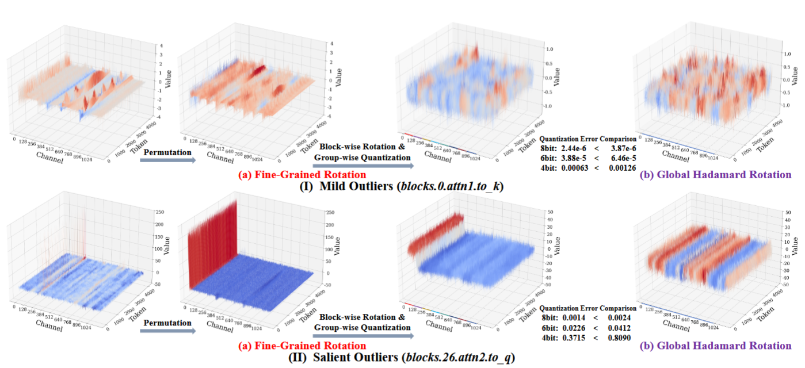
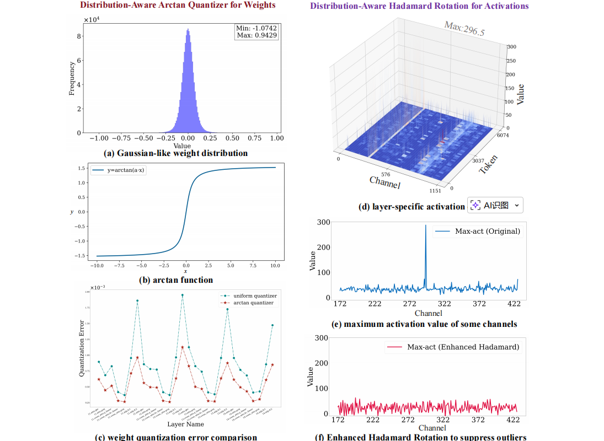
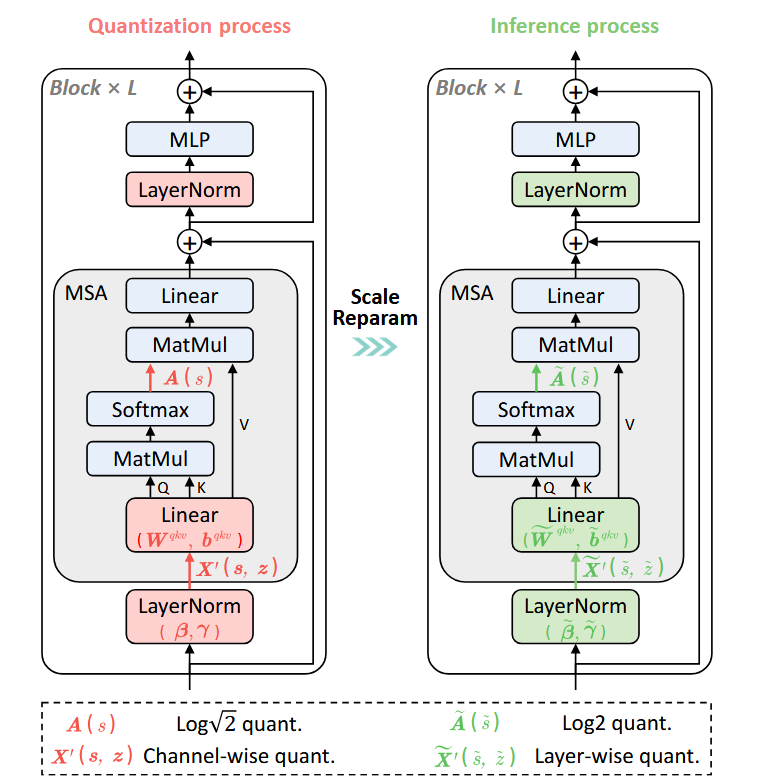
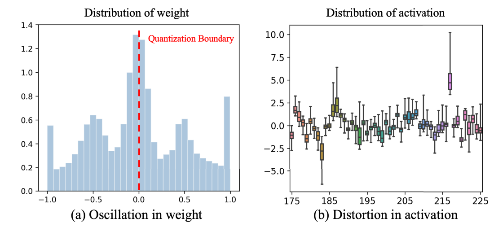
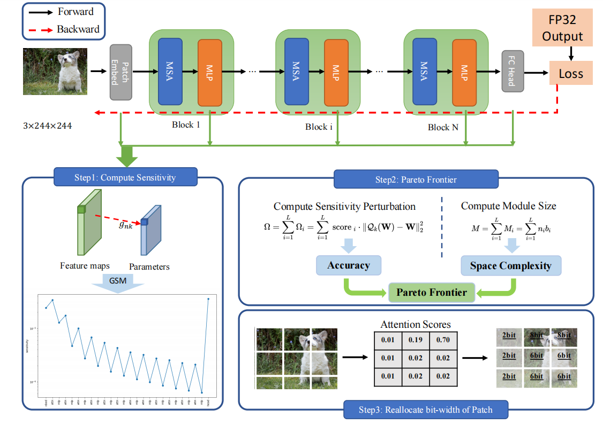
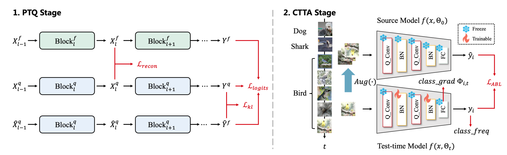

|
Yang Lianwei / 杨联伟
I am currently a PhD candidate at the Institute of Automation, Chinese Academy of Sciences, supervised by Prof. Qingyi Gu. I am also affiliated with the Institute of Artificial Intelligence, Chinese Academy of Sciences. Concurrently, I am a visiting student in the EffAlg Group at the NICSEFC Lab, Department of Electronic Engineering, Tsinghua University, collaborating with Prof. Yu Wang (IEEE Fellow) and Assistant Professor Xuefei Ning. Previously, I received my Bachelor of Engineering degree from School of Communication Engineering, Jilin University, where I worked under the supervision of Prof. Xiaoping Yang.
Email /
Scholar /
Github /
ORCID /
ResearchGate /
Wechat
|
|
Research
I am interested in Computer Vision, Deep Learning, Image Processing, Pattern Recognition, Image and Video Generation.
My research mainly focuses on Model Compression, Efficient Deep Learning, Model Quantization, and AIGC.
|
News
|
|
2024.06 - Our paper (MGRQ) is accepted by ICIP 2024 (IEEE International Conference on Image Processing).
|
|

|
|
|

|
IEEE TCSVT, Under Revision | arXiv
|
|

|
IEEE TCSVT, Under Revision | arXiv
|
|

|
Lianwei Yang,
Haokun Lin,
Tianchen Zhao,
Yichen Wu,
Yuantian Shao,
Ruiqi Xie,
Hongyu Zhu,
Peisong Wang,
Caifeng Shan,
Zhenan Sun,
Yu Wang,
Qingyi Gu*
IEEE TMM, Under Revision | arXiv
|
|

|
ICMR, Under Revision | arXiv
|
|

|
ICCV (CCF-A), 2023 | arXiv
|
|

|
IEEE TCSVT (SCI-Q1,CCF-B,JCR-Q1), 2024 | arXiv
|
|

|
IEEE IJCNN (CCF-C), 2023 | arXiv
|
|

|
Under Revision, 2025 | arXiv
|
|
Reviewers
|
CVPR, ICCV, NeurIPS, AAAI, ACMM, TNNLS, TCSVT, ICASSP
|
|
Collaborators
|
*Alphabetical
Chen Qian, Department of Electronic Engineering, Tsinghua University
Gong Haisong, Institute of Automation, Chinese Academy of Sciences
Guo Jinyue, Institute of Automation, Chinese Academy of Sciences
Lin Haokun, Institute of Automation, Chinese Academy of Sciences
Liu Enshu, Department of Electronic Engineering, Tsinghua University
Long Xianlei, School of Computer Science, Chongqing university
Shao Yuantian, Institute of Automation, Chinese Academy of Sciences
Wu Yichen, MGB/Harvard Medical School
Xiao Junrui, Institute of Automation, Chinese Academy of Sciences
Xie Ruiqi, Department of Electronic Engineering, Tsinghua University
Zhang Yanchao, Institute of Automation, Chinese Academy of Sciences
Zhao Tianchen, Department of Electronic Engineering, Tsinghua University
Zhong Yunshan, School of Computer Science, Hainan university
Zhu Hongyu, Department of Electronic Engineering, Tsinghua University
To be updated
|
|
Honors & Awards
|
National Scholarship, 2017-2018
National Scholarship, 2018-2019
National Scholarship, 2019-2020
Model Student for National Scholarship, College Level, Jilin University, 2020
Finalist Nominee, Top Ten Outstanding Students, Jilin University, 2020
Outstanding Graduate, Jilin University, 2021
Excellent Undergraduate Thesis, Jilin University, 2021
Dongrong Scholarship, Jilin University, 2018
Yongding Scholarship, Jilin University, 2019
Qi An Xin Scholarship, Jilin University, 2020
First-Class Scholarship, Jilin University, 2020-2021
Excellent College Student, Jilin University, 2017-2018
Excellent University Student, Jilin University, 2018-2019
Excellent University Student, Jilin University, 2019-2020
Excellent University Student, Jilin University, 2020-2021
Individual Scholarship, Jilin University, 2017-2018
Individual Scholarship, Jilin University, 2018-2019
Individual Scholarship, Jilin University, 2019-2020
Individual Scholarship, Jilin University, 2020-2021
|
Feel free to steal this website's source code. Do not scrape the HTML from this page itself, as it includes analytics tags that you do not want on your own website — use the github code instead. Also, consider using Leonid Keselman's Jekyll fork of this page.
|
|
{kind=link}
{kind=link}